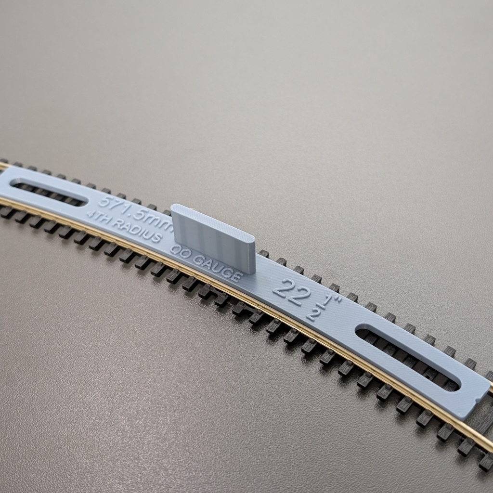
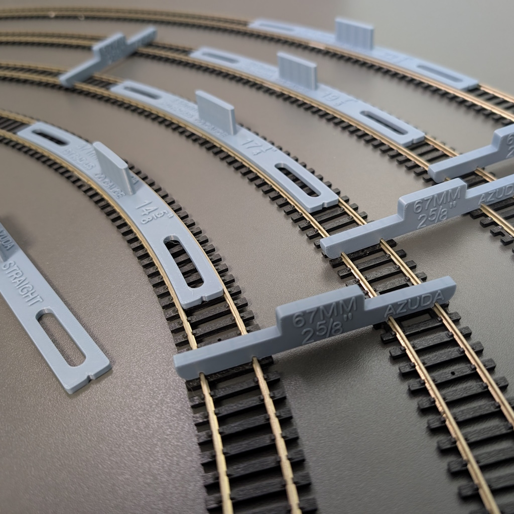

Why modellers choose Azuda
Built-in handles let you grip, slide and reposition each template along the rails — modellers say it’s far easier than flat gauges.
Form flexitrack to a consistent radius and pin it through the cut-outs so it holds its shape while you fix the trackbed.
Double-track spacing templates hold a reliable parallel gap on straights and through curves, for safe clearance and a tidy layout.
What modellers say
A few words from verified eBay buyers — see all feedback on our eBay shop.
“Unlike other track setting tools, these have handles making moving the pieces along easier. Measurements are in both metric and imperial.”
“These really help working with flexi track and keep the rails in perfect alignment and prevent overbending and damaging the rails. First class.”
“Integrated handles make moving around much easier than some. Good value for money — as good if not better than more expensive versions.”
Product photos
Examples of Azuda OO gauge radius templates and spacing tools (photos shown: a radius template, a pinning cut-out, and a complete kit/set).



Featured kit example: radius templates + 67mm track spacers
One popular configuration is a combined kit for accurate curve forming and consistent 67mm parallel track spacing on straights and curves. (Other radii and kit combinations are available across the range.)
Typical kit contents
- Straight track template (straightener)
- Curved radius templates (commonly 2nd–5th radius)
- 67mm double track spacing templates (2⅝")
Integrated handles make templates easy to place, slide, and reposition while forming flexitrack and fixing the trackbed.
Spacing templates can be moved progressively along the track, helping maintain clearance and a consistent parallel gap.
Compatibility
- Designed for OO / HO gauge (16.5mm) track
- Ideal for flexitrack and set-track transitions
- Works with Code 75 and Code 100 rail
- Likely compatible with Code 83 (not formally tested)
Frequently asked questions
Which radius do I need?
OO set-track radii run from tighter curves (1st radius, around 371mm) up to broad, realistic main-line curves. Tighter radii suit tabletop layouts, branch lines and sidings; broader radii suit larger boards and express running. Our kits bundle four consecutive radii so you can shape a natural flow from tighter to sweeping curves. Not sure? Message us with your space and we’ll help you choose.
What is 67mm track spacing, and why does it matter?
67mm is a commonly used gap between parallel OO gauge tracks, giving reliable clearance for passing stock — particularly on curves. Keeping the spacing consistent improves both the look of the layout and smooth running. Our spacing templates hold that gap accurately on straights and through bends.
Will they work with my track?
They’re designed for OO/HO gauge (16.5mm) track and are ideal for flexitrack and set-track transitions. They work with Code 75 and Code 100 rail, and are very likely compatible with Code 83 (not formally tested).
What is the 3D printed finish like?
Every item is 3D printed on well-tuned machines and inspected before dispatch. You may occasionally see minor stringing or a small mark from the print brim (used to improve bed adhesion) — it’s purely cosmetic, easily removed, and never affects accuracy or performance.
3D printed quality
All items are 3D printed and inspected before dispatch. Minor cosmetic marks or light stringing may occasionally be present and can be removed if required. This does not affect accuracy or performance.
Browse the full range
Contact
For product questions, the quickest way is to message via the marketplace listing you plan to buy from.